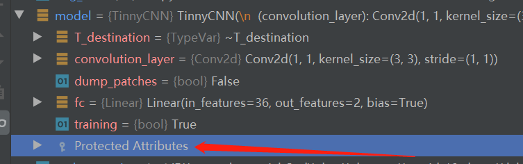
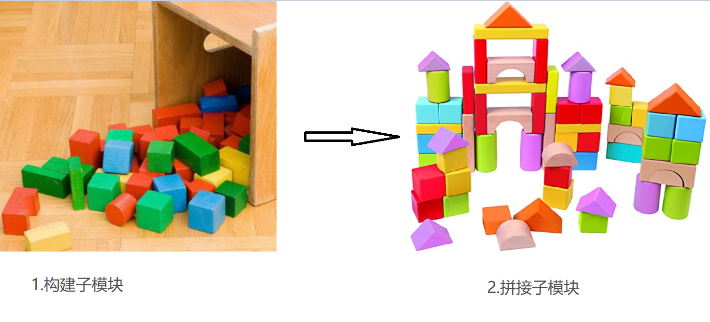
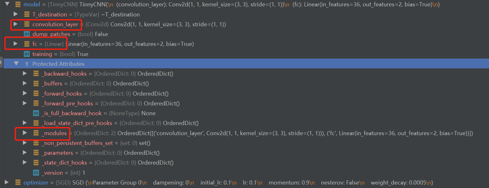
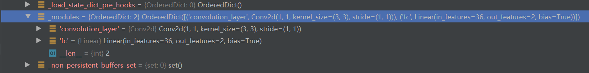

4.1 Module & parameter
Module初认识
深度学习指深度神经网络，也是我们常说的模型（Model），一个模型包含很多个网络层，多个网络层拼接构建成一个模型。在pytorch中模型是一个Module，各网络层、模块也是Module，本小节就介绍模型/模块的抽象——Module。后续不加以说明的话，模型、模块、网络层都可指代Module。
Module是所有神经网络的基类，所有的模型都必须继承于Module类，并且它可以嵌套，一个Module里可以包含另外一个Module。要想理解清楚这句话就必须清楚了解一个Module是如何工作的。在第二章我们就构建了一个Module——TinnyCNN，第三章讲解transform的时候也用到了Module，并且知道它的前向传播具体执行是在forward()函数当中，其实Module定义了一些列属性来管理模块的功能，分别用8个有序字典进行管理，分别是：
self._modules = OrderedDict()
self._parameters = OrderedDict()
self._buffers = OrderedDict()
self._backward_hooks = OrderedDict()
self._forward_hooks = OrderedDict()
self._forward_pre_hooks = OrderedDict()
self._state_dict_hooks = OrderedDict()
self._load_state_dict_pre_hooks = OrderedDict()
它们的作用分别是
- modules : 存储管理nn.Module类
- parameters: 存储管理nn.Parameter类
- buffers：存储管理缓冲属性，如BN层中的running_mean
- *_hooks：存储管理钩子函数
讲到这，大家估计很懵，因为与前面接触到的内容完全搭不上边。但是这些又是Module的核心知识点，为了降低大家的学习曲线斜率，在这里暂且只需要知道一个Module有这些关键属性用于管理Module，以及在哪里找到它们——debug模式下的Protected Attributes看到它们的详情。 
forward函数
除了八大核心属性之外，还有一个函数不得不了解，那就是forward函数，forward之于Module等价于getitem之于Dataset。forward函数是模型每次调用的具体实现，所有的模型必须实现forward函数，否则调用时会报错
Traceback (most recent call last):
File "E:/pytorch-tutorial-2nd/code/chapter-2/02_COVID_19_cls.py", line 150, in <module>
main()
File "E:/pytorch-tutorial-2nd/code/chapter-2/02_COVID_19_cls.py", line 111, in main
outputs = model(data)
File "D:\Anaconda_data\envs\pytorch_1.10_gpu\lib\site-packages\torch\nn\modules\module.py", line 1102, in _call_impl
return forward_call(*input, **kwargs)
File "D:\Anaconda_data\envs\pytorch_1.10_gpu\lib\site-packages\torch\nn\modules\module.py", line 201, in _forward_unimplemented
raise NotImplementedError
NotImplementedError
Process finished with exit code 1
到这里，总结一下Module：
- Module是所有模型的基类
- 每个module有8个字典管理它的核心属性
- 一个module可以包含多个子module
- 一个module相当于一个运算，必须实现forward函数
一个模型的创建
下面通过简单的代码慢慢去熟悉Module，回顾TinnyCNN的创建与使用，可以总结出一个模型的创建需要考虑两个要素：
- 构建子模块：构建网络所需要的网络层，如卷积层，池化层，全联接层等等
- 拼接子模块：在forward函数中定义需要执行的功能，即将子模块以一定的方式拼接起来，完成对数据的前向传播
模型的创建就像搭积木，首先收集到需要的基础部件，是三角形、正方形还是六边形，然后以一定的方式拼接起来，如果要一个屋子就先放正方形，然后放三角形。如果需要一个汽车就先放两个圆形，再放一个长方形。
同理，模型搭建也是，先知道有哪些网络层是需要的，那么再init函数里进行初始化，先让此类获得这些网络层可用。具体如何用，需要在forward函数中写清楚。就像下面这个图一样。 
知道了Module有哪些关键属性，以及一个模型如何创建，下面回顾2.2小结的COVID-19分类代码，采用debug方式观察TinnyCNN的创建——model = TinnyCNN(2)， 以及它的推理： outputs = model(data)
TinnyCNN的创建
代码在：code/chapter-2/02_COVID_19_cls.py
模型实例化的代码是这行：
model = TinnyCNN(2)
我们打下断点，采用debug运行，进行分析如下：
- 进入 TinnyCNN 类的init函数：这里进行初始化，可以看到第一行就是调用父类的init函数，父类是Module，因此我们继续step into进去看看；
- 来到 Module类的init函数：这里会初始化那8个有序字典，以及一些关键属性，如training等。我们跳出去；
- 回到TinnyCNN 类的init函数：父类init函数结束，就来到自定义的组件定义部分，这里我们需要一个卷积层、一个全连接层供搭积木使用。这里的nn.Conv2d也是一个module，大家可以自行step into进去观察它的创建，这里暂且知道它是一个module即可。同理，nn.Linear也是。init函数里收集了需要搭积木的组件，下面跳出去。
- 回到主代码：model = TinnyCNN(2)，这样一个模型就创建好了，我们可以看到model下面就有了这些属性： 
- 重点看红框的三个内容，分别是convolution_layer、fc和_modules。前两个没啥好说的，是init函数中自定义的类属性名称，而第三个_modules什么时候“悄悄”地记录了我们自己定义的convolution_layer和fc呢？ 
这就需要大家了解一下python的基础了，请看这行代码：
self.convolution_layer = nn.Conv2d(1, 1, kernel_size=(3, 3))
在类属性赋值的时候，即这行代码中的“=”号，会调用类的__setattr__方法，在module.py的1180行代码是setatrr的实现，里面会将“=”号右边的值放到相应的地方去，如module会放到_modules里，parameter会放到_parameters里。
- 至此，对于模型的创建流程有了解后，下面看看模型的推理是如何进行的，它可不是简单的进入forward函数就完事了，中间还有复杂的辅助功能，一起往下看。
TinnyCNN的推理
继续采用debug，往下看。 先来到模型调用的地方：outputs = model(data)，采用step into进入；
- 来到Module类的call_impl函数：熟悉python的朋友就疑惑了，为什么进入的是它而不是\_call__函数？（python规定可被调用的对象，其实现是在__call__\函数里）其实并没有错，只Module类对call函数重命名了罢了，可以看到1148行
__call__ : Callable[..., Any] = _call_impl
在早期版本的pytorch中还没有这一层包装，请各位专家指导一下为什么采用这种方式？
在_call_impl函数当中才会调用forward函数来实现数据的前向传播，但module除了forward调用之外，还有一些辅助功能，那就是一系列的hook函数的使用，这里暂且放下，后续会展开hook函数的作用。这里只需要关心怎么进入forward的。如果没有设置任何hook函数，则直接进行forward函数的调用
if not (self._backward_hooks or self._forward_hooks or self._forward_pre_hooks or _global_backward_hooks
or _global_forward_hooks or _global_forward_pre_hooks):
return forward_call(*input, **kwargs)
step into 进入 return forward_call(input, *kwargs)，就会发现来到了自定义的forward函数。
- 来到TinnyCNN类的forward函数：这里就是我们如何拼接网络层，组装积木的地方了。
通常会在这里调用其他module来完成数据的处理，例如使用nn.Conv2d来进行卷及操作，除了使用module对象，其它的数学运算、功能函数（如torch.nn.functionals里的系列函数）、for循环等都是可以使用的。 值得说的一点是，一些激活函数它没有可训练参数，也不是module类，因此会在forward函数中直接调用，而不需要在init中初始化。比如 ：out = F.relu(self.conv1(x)) 中的F.relu。
- 最后要强调一点是：forward函数中需要注意前后层数据的格式，类似transforms的实现一样，上一层的输出一定要对得上下一层的输入，否则会报错，常见的报错是Linear层接收到了不合适的数据。建议大家把TinnyCNN的forward函数的第二行注释掉：# x = x.view(x.size(0),-1)，运行代码并观察错误，这个错误是90%以上的朋友都会遇到的：RuntimeError: mat1 and mat2 shapes cannot be multiplied (12x6 and 36x2)。
到这里一个模型的搭建以及前向推理就很清晰了，构建自己的网络只需要三步：
写一个类继承于Module
init函数中把需要的网络层创建好
- forward函数中把模型如何搭建的规则写好
Parameter
在Module中有一个重要的对象——Parameter，参数。它继承于Tensor，与Tensor差别不太大，主要作用是用来区分可训练的参数与常规的Tensor。
在这里要做一下说明，权重、参数和超参数，它们的含义。一般情况下模型的权重就表示模型的参数，它们是可训练的，通过反向传播算法不断的更新；而超参数如卷积核大小、学习率、迭代次数是不能通过反向传播算法去更新的。很明显Parameter就指模型的参数，如卷积层的卷积核权重和偏置，Linear层的权重和偏置，BN层的α和β等等。
Module中对于参数是采用_parameters 进行管理的，并且提供相应的api可以对module内所有参数进行调用与读取。回顾2.2 COVID-19的优化器实例化这行代码：
optimizer = optim.SGD(model.parameters(), lr=0.1, momentum=0.9, weight_decay=5e-4)
代码中表示把model.parameters()返回的内容给优化器，让优化器更新model.parameters()，从这里可进一步理解parameter类的作用，以及各网络层它们的参数都会初始化为parameter类。
可以看看 D:\Anaconda_data\envs\pytorch_1.10_gpu\Lib\site-packages\torch\nn\modules\conv.py的131行代码
self.weight = Parameter(torch.empty(
(out_channels, in_channels // groups, *kernel_size), **factory_kwargs))
对默认的卷积核采用empty初始化数值，然后包装成Parameter类。
小结
到这里，一个简单模型是如何创建、如何工作的我们就已经讲解完了。但随着深度神经网络的拓扑结构越来越复杂，层数越来越多，只靠上面的方法无法很好的构建神经网络，还需要借助一些容器把固定的模块封装起来，循环地进行调用。下一节将介绍Module的容器，包括以下5个
| - | - |
|---|---|
| Sequential | A sequential container. |
| ModuleList | Holds submodules in a list. |
| ModuleDict | Holds submodules in a dictionary. |
| ParameterList | Holds parameters in a list. |
| Parameter | DictHolds parameters in a dictionary. |